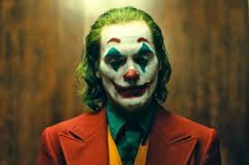

Alguns Filmes da DC
liga da justiça
.jpg)
liga da justiça
"Liga da Justiça" é um filme de super-heróis lançado em 2017, dirigido por Zack Snyder, com uma versão alternativa lançada em 2021, conhecida como "Zack Snyder's Justice League". O filme faz parte do universo cinematográfico da DC Comics, o DC Extended Universe (DCEU).
A história começa após os eventos de "Batman vs Superman: A Origem da Justiça". Após a morte de Superman, Bruce Wayne, também conhecido como Batman, se une a Diana Prince, a Mulher-Maravilha, para montar uma equipe de super-heróis capaz de defender a Terra contra uma ameaça iminente.
Essa ameaça é Steppenwolf, um poderoso guerreiro intergaláctico, que busca reunir três Caixas Maternas, artefatos de poder inimaginável, para destruir o mundo e trazer de volta seu mestre, Darkseid. Percebendo a gravidade da situação, Batman e Mulher-Maravilha recrutam outros heróis com habilidades especiais para formar a Liga da Justiça.
Os membros da equipe incluem Aquaman, um atlante resistente e habilidoso nas águas; Flash, um jovem com super velocidade; e Cyborg, um homem que foi transformado em uma máquina com capacidades tecnológicas impressionantes.
Ao longo do filme, a Liga da Justiça enfrenta desafios emocionantes e perigosos enquanto tenta impedir os planos de Steppenwolf e salvar a Terra da destruição. Eles precisam aprender a trabalhar juntos e superar suas diferenças para se tornarem uma equipe unida e eficiente.
A versão de Zack Snyder, lançada em 2021, expandiu a narrativa e acrescentou mais detalhes à história, além de incluir cenas e subtramas que não estavam presentes na versão original de 2017. Essa versão foi muito bem recebida pelos fãs e ajudou a destacar a visão original do diretor para o filme.
"Liga da Justiça" é uma aventura emocionante e épica que reúne alguns dos heróis mais icônicos da DC Comics para enfrentar uma ameaça de proporções catastróficas. O filme combina ação, efeitos especiais impressionantes e momentos emocionantes, oferecendo uma experiência empolgante para os fãs de super-heróis.
Saiba maisBatman vs Superman: A Origem da Justiça
.jpg)
"Batman vs Superman: A Origem da Justiça" é um filme de super-heróis lançado em 2016, dirigido por Zack Snyder. O filme é uma sequência direta de "O Homem de Aço" (2013) e faz parte do universo cinematográfico da DC Comics, conhecido como DC Extended Universe (DCEU).
A história se passa após os eventos de "O Homem de Aço" e mostra o mundo dividido em relação ao Superman, com muitos o considerando um herói, mas outros o veem como uma ameaça. Enquanto isso, Bruce Wayne, também conhecido como Batman, vê Superman como uma potencial ameaça à humanidade e decide tomar medidas para detê-lo.
Enquanto Batman e Superman estão em conflito, uma figura misteriosa chamada Lex Luthor está manipulando os eventos por trás dos bastidores, usando seu conhecimento sobre os heróis para colocá-los um contra o outro.
O filme explora temas como a responsabilidade dos super-heróis, o papel da justiça e o confronto entre ideais diferentes. À medida que a batalha entre Batman e Superman se desenrola, surge uma ameaça ainda maior, e eles são forçados a se unirem para enfrentar um inimigo poderoso que coloca a humanidade em perigo.
Além do confronto entre os dois super-heróis, o filme também introduz outros personagens da DC Comics, como a Mulher-Maravilha, que desempenha um papel significativo na história.
"Batman vs Superman: A Origem da Justiça" foi um filme amplamente aguardado pelos fãs de quadrinhos e gerou muita expectativa. Embora tenha sido um sucesso comercial nas bilheterias, o filme dividiu a opinião dos críticos e do público, recebendo críticas mistas.
Apesar das opiniões divergentes, o filme marcou um momento importante na expansão do universo cinematográfico da DC e preparou o terreno para futuros filmes do DCEU.
Saiba maisJoker
Joker é um filme de drama e suspense psicológico lançado em 2019, dirigido por Todd Phillips. O filme conta a história da origem do icônico vilão Coringa, inimigo arqui-inimigo do Batman. Joaquin Phoenix interpreta o protagonista, Arthur Fleck, um homem mentalmente perturbado e socialmente isolado que trabalha como palhaço em uma cidade decadente de Gotham City.
O enredo do filme segue a jornada de Arthur Fleck enquanto ele enfrenta uma série de adversidades e desafios em sua vida pessoal e profissional. Ele lida com questões de saúde mental, rejeição social e uma cidade que está à beira do caos social e político. Conforme o filme avança, a realidade de Arthur começa a se desfazer, e ele mergulha cada vez mais em um estado de instabilidade mental e violência.
A narrativa de Joker explora as origens e motivações do personagem, revelando como a sociedade o marginalizou e negligenciou, contribuindo para sua transformação no icônico vilão. O filme aborda temas profundos, como a alienação social, a violência, a desigualdade e a natureza da loucura.
A atuação de Joaquin Phoenix no papel-título foi amplamente aclamada, rendendo-lhe inúmeros prêmios, incluindo o Oscar de Melhor Ator. Joker foi elogiado pela sua abordagem ousada e sombria, bem como pela exploração profunda e perturbadora do personagem central.
No entanto, Joker também gerou controvérsia devido ao seu retrato do vilão e às suas implicações sociais. O filme recebeu atenção crítica e comercial, tornando-se um sucesso de bilheteria e dividindo opiniões entre o público e os críticos.
Em resumo, Joker é uma jornada psicológica e emocionalmente intensa que explora as origens de um dos vilões mais icônicos da cultura pop, mergulhando nas profundezas da mente de Arthur Fleck e mostrando como a sociedade pode influenciar e moldar a criação de um vilão.
Saiba maisMulher-Maravilha

O filme "Mulher-Maravilha" é uma produção cinematográfica lançada em 2017, dirigida por Patty Jenkins e distribuída pela Warner Bros. Pictures como parte do Universo Estendido da DC (DCEU). O filme é estrelado por Gal Gadot no papel da icônica heroína amazona, a Mulher-Maravilha, também conhecida como Diana Prince.
A história do filme se passa durante a Primeira Guerra Mundial e começa na ilha paradisíaca de Themyscira, lar das amazonas, uma raça de guerreiras imortais criadas pelas deusas gregas. Diana Prince, filha da Rainha Hipólita, foi criada na ilha, mas sua vida muda quando um piloto americano chamado Steve Trevor, interpretado por Chris Pine, acidentalmente chega à ilha enquanto fugia de inimigos alemães.
Ao tomar conhecimento do conflito mundial em curso, Diana acredita que o deus da guerra, Ares, está por trás da guerra e acredita que é sua missão matá-lo para restaurar a paz no mundo. Convicta de sua missão, Diana decide acompanhar Steve Trevor de volta ao mundo dos homens, e juntos embarcam em uma jornada para pôr fim ao conflito e evitar que uma terrível arma seja usada.
Ao longo do filme, Diana assume o manto da Mulher-Maravilha, usando suas habilidades sobre-humanas e seus icônicos acessórios, como os braceletes mágicos e o laço da verdade, para lutar contra os inimigos e proteger os inocentes. Ela se torna um símbolo de esperança e inspiração para as pessoas ao seu redor, mostrando coragem e compaixão em sua busca por justiça.
"Mulher-Maravilha" recebeu aclamação da crítica e foi um sucesso de bilheteria, tornando-se um marco significativo na representação de super-heroínas no cinema. O filme foi elogiado por sua direção, atuações, coreografias de luta e a representação da poderosa protagonista feminina.
Além de seu impacto cultural, o filme "Mulher-Maravilha" foi amplamente considerado como um passo importante para uma maior representatividade feminina no gênero de filmes de super-heróis. O sucesso do filme levou à sequência intitulada "Mulher-Maravilha 1984", lançada em 2020, que continua a explorar as aventuras da heroína ao longo do tempo.
No geral, o filme "Mulher-Maravilha" solidificou a posição da personagem como uma das figuras mais populares e inspiradoras da DC Comics, encorajando uma nova geração de fãs a se identificar com sua mensagem de empoderamento e coragem.
Saiba mais.jpg)
.jpg)
.jpg)


.jpg)